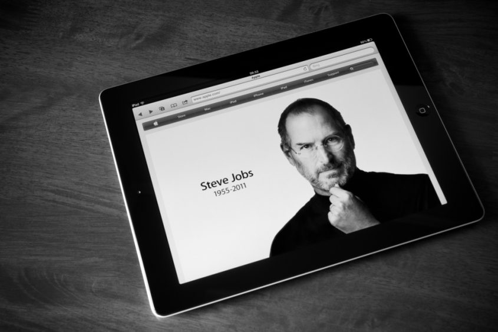

Quem foi Steven Jobs
Steven Paul Jobs nasceu no estado da Califórnia, nos Estados Unidos, no dia 24 de fevereiro de 1955.
Ele é filho biológico de Abdulfattah John Jandali e Joanne Carole Schieble. Assim que nasceu, Jobs foi entregue à adoção. Steve Jobs foi então adotado pelo casal Paul e Clara Jobs.
Seu primeiro emprego foi na década de 70, quando foi contratado pela HP (Hewlett-Packard). Foi nesta empresa que ele conheceu seu amigo Steve Wozniak.
Juntamente com Steve Wozniak e Ronald Wayne, ele funda em 01 de abril de 1976, na cidade de Cupertino na Califórnia, a Apple. Para fundar esta empresa eles tiveram que vender valiosos bens, como um micro-ônibus da Volkswagen e uma calculadora científica.
Foi no quarto de Jobs que eles desenvolveram o Apple I. A revolução inicial foi reduzir o tamanho dos computadores.
Em 1984 veio a nova revolução. A criação do Macintosh, o primeiro computador comercial com interface gráfica.
Em 1985, Jobs sai da Apple e funda a NeXT, uma empresa que produzia computadores na área educacional.
No ano seguinte ele compra a empresa de computação gráfica de George Lucas, que mudaria seu nome para Pixar.
Em 1996 a Apple recontrata Jobs e então se dá o lançamento de importantes produtos da empresa, como o iMac, o Mac OS, o iPod, o iTunes, o iPhone e o iPad.
Esposa e filhos
Steve Jobs e Laurene Powell se casaram em 18 de março de 1991. O casal teve 3 filhos: Eve Jobs, Brin Siena Jobs e Reed Jobs. Steve também é pai de Lisa Brennan – Jobs, filha de seu relacionamento com a namorada Chrisann Brennan quando ele tinha apenas 23 anos.
A sua morte
Em 2004, Jobs foi diagnosticado com um raro tipo de câncer no pâncreas. Neste mesmo ano ele faz uma cirurgia para a retirada do tumor.
Como forma de impedir a volta deste câncer, em 2009 ele faz um transplante de fígado.
Steve Jobs faleceu no dia 05 de outubro de 2011, aos 56 anos.
Ele era casado com Laurene Powell desde 1991 e com ela teve três filhos: Reed Paul, Erin Sienna e Eve. Jobs também teve uma outra filha fruto de um antigo relacionamento, Lisa Brennan-Jobs.